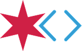

Service & Product
Voma
Two years overhauling a workflow, then building the product to fix it.
Two years overhauling a workflow, then building the product to fix it.

Code for Chicago was a volunteer-run civic tech brigade under the Code for America Brigade.
A volunteer onboarding process worked, but ran entirely on manual effort that didn't scale.
Over 2 years: a tested service model, a design system, and a shipped MVP.
Product & Design Lead, Project Manager
Many wonderful volunteers across 2 years: Dev Leads, Devs, Designers, Researchers
Defined and iterated service model, managed and assigned tickets, established the design system.
The first hour was orientation and agenda-setting: brigade news, current projects, future projects. The second hour was aside time for project work. Sometimes we had a speaker.
Our early pain points were reconciling how we structured the format for new and returning members. New members learned about in-progress project tasks for the first time. Returning members heard us orient for the thousandth time. If you had a skill that didn't fit our current projects then you were left lingering for the remaining hour. No mechanisms for follow-up, checking-in, and no accountability for when members don't return on a deliverable. It was casual.
When covid happened, we transitioned the same format online. Instead of a coworking space it was a 2-hour Zoom call. The problems we had when we were in-person were exacerbated. It was more difficult to both orient and work on projects remotely. I proposed shifting to a new model which deliberately separated the orientation and project spaces.
Through Meetup via Zoom call, we facilitated a twice-monthly, one-hour onboarding night. The goal of that call was to orient participants to our process and projects. If they were interested in signing up, we provided them a Google Form link which gave us basic information like their email and their skill (e.g. Development, Design, Project Management, etc.). From there I would set up a one-on-one 30 minute "interview." The purpose of that call was to gather more info about each potential volunteer to identify best fit. Afterwards, if there was project fit and availability on a project they were assigned to the project accordingly. Otherwise they were waitlisted and welcomed to participate in our Slack channel.
Compared to our previous model, every project had their own meeting cadence. Essentially, we shifted to a digital consultancy model where each project was assigned a "lead." In the past, brigade leadership handled all client communication directly. Under this model, that responsibility was delegated to each project's designated lead and members.
When we launched the plan in 2021, I scoped it to run 6 months to evaluate its effectiveness. During this time I was gathering data on participants, attendance, and project funnel. Overall, I felt that this was an effective process. Towards the end of 2021 we increased the overall volunteer pool from 15-20 to 54 active volunteers. We also increased the number of active projects from 6 in 2020 to 10 in 2021.
The only real problem was that for a volunteer organization, this was unsustainable.
The workflow for facilitating this process was manually intensive. The reason for the workflow was to execute a low-to-no-cost method for capturing data AND having a visible system for managing volunteers.
The sequence of steps looked something like this:
There were 3 pain points that I wanted to resolve as we iterated this process:
As we transitioned to 2022, I proposed we shift to an asynchronous model. This iterated model mapped what worked well in the onboarding night format: orientation and project assignment based on skills. Another layer I wanted to test was capacity. From my extensive time managing volunteers in my previous career, I think a core tenet of what makes a volunteer successful is whether they can make time to complete tasks. Of course intention and goodwill are important as well, but if a participant simply doesn't have time or can't dedicate time then they cannot make a meaningful contribution.
Some volunteers overestimate their own capacity, sometimes genuinely, from real obligations like caretaking, or sometimes simply misjudging their own bandwidth. As someone managing volunteers, I couldn't tell the difference from the outside. All I'd see was the same thing either way: a lack of follow-through.
Without expanding on this further in this case study (happy to chat about it over coffee), I'll just call it for what it is: volunteerism can be a proxy for free labor. What we did at Code for Chicago could be work you'd do if you worked at a consultancy.
With that said, the new process focused on task assignment:
We all agreed some type of volunteer onboarding was important. But the 2021 model was too time intensive for me.
As I was mapping out the service blueprint, I identified areas where automation could occur. As opposed to paying for a service, why not create one for our brigade and the brigade network as a whole?
The Voma concept would automate all the manual touchpoints I felt was important:
The volunteer team for this project spanned the entire technical spectrum: Product, Design, Development and Research.
I knew I wanted to facilitate a whole end to end design process for this project. But I wanted to test the idea at a high level first before we could commit more time to establishing a whole design system.
To start, I did a bare bones design. The goal was to test the concept so I wasn't too concerned with how the UI rendered.
As the devs worked on the initial concept, I fleshed out the UI further. For the sake of speed I used material design to ground the vision further. There were two primary tasks for the MVP:
As the project moved further along, I leveraged material design as a placeholder design system on purpose.
Around June 2022, we presented to Code for America Brigade leadership on potentially leveraging Voma and got initial buy-in. We got the initial MVP done around August 2022.
During this time I felt it was important for us to have documentation about user personas, along with some usability testing. I defined the research questions we needed answered for both volunteer and admin user groups:
I directed the research team to run the study against them with 8 participants unrelated to the brigade. Their synthesis directly shaped what made it into Voma 1.0's scope.
As we got the initial sign-off, another volunteer and I began conceiving Voma's brand and building the components that became our baseline for the design system.
As we were nearing completion of Voma 2.0, towards the end of 2022 into 2023, I had to make the difficult decision to leave the brigade. Coincidentally (and I swear I made this decision before CfA said anything), Code for America made the decision to sunset the brigade system. This meant the project would exist only for us, without the support we'd had from CfA.
I gave notice 7 weeks in advance. I used the final sprint to leave a documented handoff, which included additional features I designed:
Before I left, I created prototypes to showcase interaction for every task we planned for 2.0. Years later as I reconnected with volunteers, I learned Voma 2.0 did continue mostly as a development project as you can see in the repo. There were commits until July 2024.
As I mentioned previously, since the brigade system sunsetted, the project became a labor of love and I'm proud of all the work we put into it.
Voma consolidated the beginning part of the volunteer onboarding workflow: users registered by signing into their Slack account, then completed the surface level form fields to get started. Once they were in Voma, in lieu of going back and forth with someone like me, they chatted with a bot that had automated conditional responses based on their input. The beginning portion of their onboarding was completing tasks like watching videos or introducing themselves in the #intro channel.
As I'm watching this years later in retrospect, I wonder: if we had implemented this, how would a user navigate the system if they were truly lost? What use cases would this look like? Would we designate an actual human to facilitate this? How would this change with the advent of AI (remember this was years ago)? These are questions I'd want to explore and examine more closely once we had real data from actual use.
The other core part of this MVP was the actual volunteer assignment. You'll see that once a volunteer user completes their onboarding and requisite information we need to assign them, Voma would identify a best fit. Usually when a human was doing this (me), my criteria for project assignment were availability and skill fit. If we wanted to scale this further we could ask for seniority, physical location, and actual capacity.
Again, as I'm rewatching this recording in retrospect, I'm wondering if there was a level of judgement that was truly gray. If we implemented this, was it possible we flagged people who had skills but were too critical in their self-assessment? It is true that when this was a manual process, people did select (not often) multiple skill areas, but in talking with them I found out what they truly wanted. This was, for sure, a trade-off from transitioning to this automated process that relies on participants either being truthful or making accurate self-assessments. These are also questions I'd want to explore and examine more closely once we had real data from actual use.
I've been volunteering since I was 18. Volunteering led me to actual jobs. Being in it for a while I've developed a little cynicism. Yes, volunteering is a great way for your altruism to shine. It also fortunately/unfortunately fills an experience gap for juniors where an internship or apprenticeship should take place. I don't think an intention to volunteer that isn't wholly altruistic is inherently wrong. So long as you show up and make a meaningful contribution, I think that's all that really matters. In the end, volunteering AND managing volunteers is work.
While I enjoyed my time in the brigade system, based on the data and my experience, it felt like a space for people to transition to a tech job. Of course this included people like me who transitioned from crisis management as I was wrapping up grad school. It was truly a joy to connect with people more senior than me, and provide opportunity to mentor others as I gained my experience. This exchange is so valuable and the people I've met through the brigade have become friends since.
When we transitioned to remote, we expanded the volunteer pool beyond Chicago. In chatting with others who had their own local brigade but preferred to volunteer with us, I would hear that having a system for managing volunteers and assigning them to projects was appealing. These anecdotes provided some confidence in our decision to move away from the once-a-week format we had initially.
Voma was a culmination of the work I've done professionally up to this point. It truly felt like we lived the mantra the brigade system intended: when like-minded well-intentioned people get together to achieve a goal, amazing good can be done in the world.
{kind=link}
{kind=link}
{kind=link}
{kind=link}
{kind=link}
{kind=link}
{kind=link}
{kind=link}
{kind=link}
{kind=link}
{kind=link}
{kind=link}